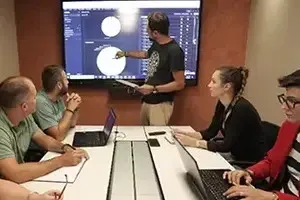

Pratimo savremene tehnološke trendove i redovno unapređujemo ponudu kako bismo odgovorili na zahteve tržišta i potrebe korisnika, kako u privatnom, tako i u poslovnom sektoru.
U našoj prodavnici računarske opreme možete pronaći različite proizvode namenjene radu, učenju, zabavi i svakodnevnom korišćenju računara. U ponudi se nalaze laptopovi, računarski miševi, tastature, monitori i druga dodatna oprema. Trudimo se da izbor proizvoda bude prilagođen različitim potrebama i mogućnostima korisnika.
Posebnu pažnju posvećujemo tome da kupci dobiju jasne informacije o proizvodima pre kupovine. Naš cilj je da korisnicima olakšamo izbor računarske opreme i pomognemo im da pronađu proizvod koji odgovara njihovoj nameni. Za dodatne informacije o proizvodima možete pogledati našu galeriju računarske opreme.
Pored ponude proizvoda, važan deo našeg poslovanja predstavljaju podrška korisnicima i kvalitet usluge. Želimo da svaki kupac dobije pouzdane informacije i pomoć pri izboru opreme. Ukoliko imate dodatna pitanja, možete nam se obratiti putem naše kontakt stranice.
Naš tim
Naš tim čine iskusni i stručno osposobljeni zaposleni koji zajedničkim radom doprinose kvalitetu usluga koje pružamo. Saradnja, znanje i posvećenost predstavljaju osnovu našeg uspeha.
Prodajni tim
Prodajni tim je zadužen za komunikaciju sa kupcima, pružanje informacija o proizvodima i pomoć pri izboru odgovarajuće opreme u skladu sa potrebama korisnika.
Tehnička podrška
Tehnička podrška pruža stručnu pomoć u vezi sa instalacijom, konfiguracijom i održavanjem računarske opreme.

Menadžment
Menadžment je odgovoran za strateško planiranje, organizaciju poslovanja i unapređenje kvaliteta usluga i procesa.